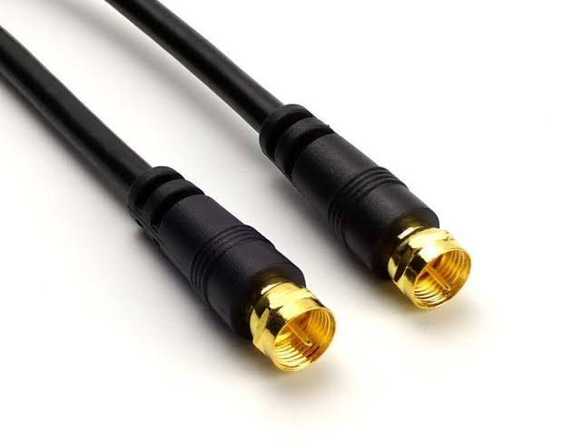
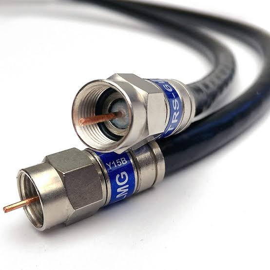
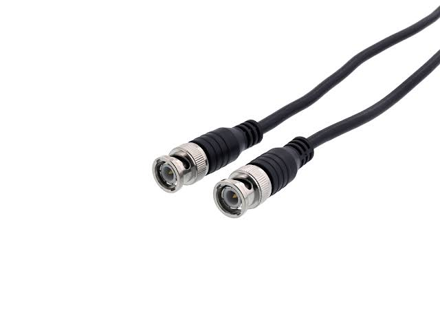

Network Components
Hardware is the parts of a computer that can be kicked

Hardware is the parts of a computer that can be kicked
A hub is an older technology that interconnects network components, such as clients and servers. Hubs vary in their number of available ports. However, for scalability, hubs can be interconnected, up to a point. If too many hubs are chained together, network errors can result. As discussed further in Chapter 3 , a hub does not perform any inspection of the traffic it passes. Rather, a hub simply receives traffic in a port (that is, a receptacle to which a network cable connects) and repeats that traffic out all of the other ports.
Like a hub, a switch interconnects network components, and they are available with a variety of port densities. A switch is considered a Layer 2 device, which means that it makes its forwarding decisions based on addresses that are physically burned into a network interface card (NIC) installed in a host (that is, any device that transmits or receives traffic on a network). This burned-in address is a Media Access Control (MAC) address.
A router is considered to be a Layer 3 device, which means that it makes its forwarding decisions based on logical network addresses. Most modern networks use Internet Protocol (IP) addressing. Therefore, most routers know what logical IP networks reside off of which router interfaces. Then, when traffic comes into a router, the router examines the destination IP address of the traffic and, based on the router’s database of networks (that is, the routing table), the router intelligently forwards the traffic out the appropriate interface.
A network device used to regenerate or replicate a signal. Repeaters are used in transmission systems to regenerate analog or digital signals distorted by transmission loss. Analog repeaters frequently can only amplify the signal while digital repeaters can reconstruct a signal to near its original quality.
The term client defines the device an end user uses to access a network. This device might be a workstation, laptop, smartphone with wireless capabilities, or a variety of other end-user terminal devices.
A server , as the name suggests, serves up resources to a network. These resources might include e-mail access as provided by an e-mail server, web pages as provided by a web server, or files available on a file server.
The previously mentioned devices need to be interconnected via some sort of media . This media could be copper cabling. It could be a fiber-optic cable. Media might not even be a cable, as is the case with wireless networks, where radio waves travel through the media of air. Chapter 3 expands on this discussion of media. For now, realize that media varies in its cost, bandwidth capacity, and distance limitation. For example, although fiber-optic cabling is more expensive than unshielded twisted-pair cabling, it can typically carry traffic over longer distances and has a greater bandwidth capacity (that is, the capacity to carry a higher data rate).
Today, most networks connect to one or more other networks. For example, if your company has two locations, and those two locations are interconnected (perhaps via a Frame Relay or Multiprotocol Label Switching [MPLS] network), the link that interconnects those networks is typically referred to as a wide-area network (WAN) link. WANs, and technologies supporting WANs, are covered in Chapter 7 , “Introducing Wide-Area Networks.”
It has a single copper conductor in the middle. A plastic layer provides insulation between the braided metal shield and center conductor. The metal shield blocks outer interference from motors, fluorescent lights, and other computers.
| Cable Name | Image | Description |
|---|---|---|
| RG-59 |  | Hardline cables are often used for high signal strength applications, as with radio transmitters or other devices. |
| RG-6 |  | Typically used for short-distance applications, such as carrying composite video between two nearby devices. This cable type has loss characteristics such that it is not appropriate for long-distance applications. RG-59 cable has a characteristic impedance of 75 Ohms |
| RG-58 |  | Commonly used by local cable companies to connect individual homes to the cable company’s distribution network. Like RG-59 cable, RG-6 cable has a characteristic impedance of 75 Ohms. |
NOTE The RG prefix used in coaxial cable types stands for radio guide .
Common connectors used on coaxial cables are as follows:
It is a special kind of copper telephone wiring used in business installations. An external shield which functions as a ground is added to the normal twisted pair telephone wires. Shielded twisted pair may be the answer if you want to place the cable in an area with potential interference and risk to the electrical current in the UTP. Shielded cables can also help in expanding the distance between the cables.
Unshielded twisted pair (UTP) cables are widely used in the computer and telecommunications industry as Ethernet cables and telephone wires. In an UTP cable, conductors which form a single circuit are twisted around each other in order to cancel out electromagnetic interference (EMI) from external sources.
| Cable Name | Description |
|---|---|
| Category 3 | Category 3 (Cat 3) cable is commonly used in Ethernet 10BASE-T networks, which carry data at a rate of 10 Mbps (where Mbps stands for megabits per second , meaning millions of bits per second). However, Cat 3 cable can carry data at a maximum rate of 16 Mbps, as seen in some Token Ring networks. |
| Category 5 | Category 5 (Cat 5) cable is commonly used in Ethernet 100BASETX networks, which carry data at a rate of 100 Mbps. However, Cat 5 cable can carry ATM traffic at a rate of 155 Mbps. Most Cat 5 cables consist of four pairs of 24 gauge wires. Each pair is twisted, with a different number of twists per meter. However, on average, one pair of wires has a twist every 5 cm. |
| Category 5e | Category 5e (Cat 5e) cable is an updated version of Cat 5 and is commonly used for 1000BASE-T networks, which carry data at a rate of 1 Gbps. Cat 5e cable offers reduced crosstalk, as compared to Cat 5 cable. |
| Category 6 | Like Cat 5e cable, Category 6 (Cat 6) cable is commonly used for 1000BASE-T Ethernet networks. Some Cat 6 cable is made of thicker conductors (for example, 22 gauge or 23 gauge wire), although some Cat 6 cable is made from the same 24 gauge wire used by Cat 5 and Cat 5e. Cat 6 cable has thicker insulation and offers reduced crosstalk, as compared with Cat 5e. |
| Category 6a | Category 6a (Cat 6a), or augmented Cat 6 , supports twice as many frequencies as Cat 6 and can be used for 10GBASE-T networks, which can transmit data at a rate of 10 billion bits per second (10 Gbps). |
Most UTP cabling used in today’s networks is considered to be straight-through , meaning that the RJ-45 jacks at each end of a cable have matching pinouts. For example, pin 1 in an RJ-45 jack at one end of a cable uses the same copper conductor as pin 1 in the RJ-45 jack at the other end of a cable.
A fiber optic cable is a network cable that contains strands of glass fibers inside an insulated casing. They're designed for long distance, high-performance data networking, and telecommunications. Compared to wired cables, fiber optic cables provide higher bandwidth and can transmit data over longer distances.
Note: RJ (Registered Jack)
A type 45 registered jack (RJ-45) is an eight-pin connector found in most Ethernet networks. However, most Ethernet implementations only use four of the eight pins.
A type 11 registered jack (RJ-11) has the capacity to be a six-pin connector. However, most RJ-11 connectors have only two or four conductors. An RJ-11 connector is found in most home telephone networks. However, most home phones only use two of the six pins.
A 9-pin D-subminiature (DB-9) connector is commonly used as a connector for asynchronous serial communications. One of the more popular uses of a DB-9 connector is to connect the serial port on a computer with an external modem.